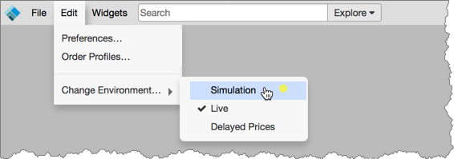
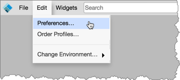
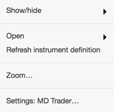
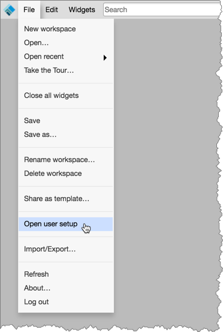
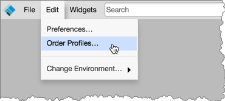

You can customize your TT workspace using essentially the same functionality in X_TRADER:
In addition, you can also switch trading environments and contact technical support and open help library topics all from within your customized TT workspace.
If you wanted access to a different customer environment on X_TRADER, you had to enter the new multicast IP address in Guardian and manually restart your Guardian and TTM services on your client workstation. For trading in the Simulation environment, you had to ensure that the minimum client applications required for the additional TT SIM software package were installed on your machine.
On TT, you can easily switch between Live and Simulation trading environments from your TT workspace or home page without needing to log out of one environment to log in to the other.

Many of the same global properties in X_TRADER are provided in the Preferences screen in your TT workspace by clicking Edit | Preferences.

TT separates customization settings into user preferences and widget-specific settings. User preferences are accessed by selecting Preferences from the workspace Edit menu.
Settings for widgets can be accessed through the widget's right-click context menu (e.g., MD Trader).

The following shows the Settings for the MD Trader widget.

Similar to the risk parameters functionality in X_TRADER, you can open the Setup application in TT from within your workspace to check your risk settings. You can view which markets and products you have access to, check margin values per contract, and view your daily credit limit and position limits assigned to your accounts and username.

In TT, your X_TRADER customer defaults can be created as "order tag defaults" and given a profile name by administrators in Setup. For example, Customer defaults can be set up per account or customer, and define values for specific fields like MiFID II fields.
In your TT workspace, you can select and customize default account and order settings using the Order Profiles widget in your TT workspace. Similar to Customer Defaults, order parameters can be set up per account or customer, and include values for specific fields (e.g., MiFID II).

In X_TRADER, the Order Defaults window is used to define order templates, which allow you to establish custom order variables for synthetic orders. In TT, templates are used to save custom order variables for submitting synthetic orders using TT order types.